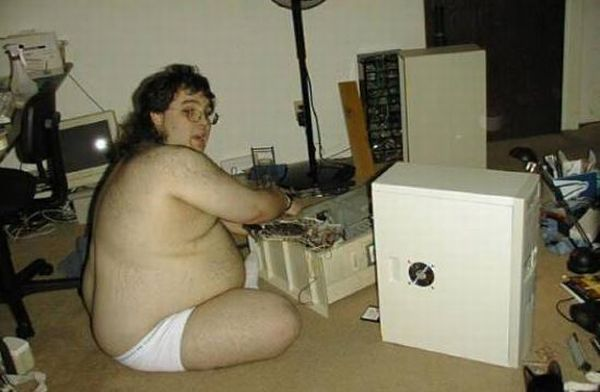
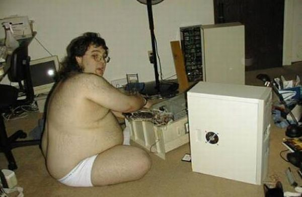

NERD
As a kid, I was always fascinated and surrounded by electronics. A Philips cassette player was among my first toys. I would take things apart to see how they worked, like how the tape winds itself around the heads in my dad's reel-to-reel recorder. I didn't necessarily know how to put everything back together though. I borrowed children's electronics books from the library and experimented with my own circuits.
My dad used to work with electronic music research and instrument building, so there was no shortage of parts at home. This is when I had my first wonderful trips into parts stores as well. My mom, a carpenter, was also a source of DIY mentality at home.
Among my favorite books were Kuinka kaikki toimii (How Stuff Works) and Keksijän käsikirja (Science Fun).
Signals came into play a little later. Our family used to spend summers at our summer place that had a radio with a shortwave band. Of course, the band was full of beeps and boops that I was eager to find an explanation for – a perfect way to spend rainy days. Eventually the sunny days, too. Pranking truck drivers with illegal Russian walkie-talkies was among those activites as well.
(All this happened to also coincide with me seeing the movie Contact.)
As a teenager I saved up for my own SW radio and started listening to numbers stations and other mysterious signals. That's how I also got interested in government intelligence, SIGINT, TEMPEST, laser microphones, and all that neat shady stuff.
This wasn't a popular children's hobby where I lived, and coupled with my social awkwardness it didn't bring me too many friends. But it didn't really matter.
Getting my Windows machine 'hacked' got me thinking about encryption, skript kiddies, tinfoil hats, and Linux.
As a 10-year-old, I had started programming with Max (pictured), a visual programming language that I used for making simple text adventures and blinkenlights. Max was a Macintosh program intended for realtime music and signals programming, but it happened to be quite accessible for children to play with. I even borrowed one of the Usborne children's BASIC game books from the library and tried translating the code listings into visual Max diagrams, which worked to some extent.
Later we got our first PC and I'd learn QuickBasic, which I soon s///'d with Perl, after someone caught me writing CGI web pages with it. (Yeah, QB CGI, it's possible.) I still use Perl for quick scripting and prototyping.
An electronics class in eighth grade taught me the basics of soldering and DIY PCB manufacturing.
I went to a science high school, majoring in physics. In college I took some classes in computer science, but wasn't extremely enthusiastic about it; my major was in biosciences, though I never graduated. New signals needed decoding, and I studied digital signal processing for fun at home. Worked as a coder at the same time.
During the past couple of years I've learnt there's a scene full of hackers like us, and they're quite a funny bunch.
 
